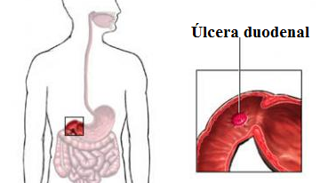

El Aparato Digestivo: repaso y ampliación
EL APARATO DIGESTIVO: REPASO Y AMPLIACIÓN
Biología y Geología |
||
|
3.º ESO |
Contenidos |
|
| El Aparato Digestivo |
||
| Repaso y ampliación | ||
Todos los órganos del aparato digestivo realizan en su conjunto una función vital: preparar los alimentos para su absorción y para que sean utilizados por millones de células del organismo. Repasaremos y ampliaremos un poco su anatomía y fisiología.
| Aparato digestivo Imagen de Kamoon7 en Wikimedia Commons. Licencia CC |
1. REPASO
La materia y la energía que necesitamos las obtenemos de los alimentos. En las células solo pueden entrar moléculas pequeñas (monómeros), muy escasas en la naturaleza, donde lo que abundan son grandes moléculas (polímeros). Por ello hay que transformar los polímeros en monómeros para suministrarle estos a las células. Ello se hace mediante las enzimas digestivas, que son moléculas (proteínas) muy específicas. El aparato digestivo es el encargado de transformar los alimentos en moléculas sencillas (monómeros). Lo hace mediante un proceso que ocurre paso a paso en sus diferentes partes: boca, faringe, esófago, estomago, intestino delgado (duodeno, yeyuno e ileon), intestino grueso (ciego, colon ascendente, colon transverso, colon descendente y recto) y el ano. Diferentes enzimas, segregadas por las paredes del intestino o por glándulas especializadas (glándulas anexas) descomponen totalmente el alimento, dejándolo preparado para ser distribuido a las células.
Mediante un proceso de absorción que ocurre en las vellosidades intestinales del intestino delgado, el alimento pasa a la sangre. Las sustancias no digeridas pasan al intestino grueso, dónde ocurren cosas importantes: se absorbe una gran cantidad de agua, se aprovecha parte de lo no digerido y se forman las heces. Nuestra salud depende en buena medida del correcto funcionamiento del aparato digestivo.
1.1. EL APARATO DIGESTIVO
El aparato digestivo es, realmente, un tubo. El alimento durante su recorrido por el mismo se ve sometido a una serie de acciones que lo van transformando.
Esas acciones son de dos tipos: unas mecánicas (el alimento se fragmenta, se amasa, se mezcla, etc.) y otras químicas (ciertas substancias, las enzimas digestivas, atacan al alimento descomponiéndolo, otras substancias químicas ayudan a la acción de las enzimas).
Por ello, además del tubo digestivo existen unas glándulas anejas encargadas de segregar muchas de esas substancias (otras las segregan las propias paredes del tubo).

La boca es el punto de entrada del alimento en el cuerpo. En ella se encuentran diferentes estructuras que lo preparan: Dientes que fragmentan, glándulas que segregan saliva y la lengua que mueve y mezcla todo.
Para fragmentar adecuadamente los diferentes tipos de alimento existen distintos tipos de piezas dentarias: los que cortan, los que desgarran y los que muelen.
Desde la boca el alimento pasa al esófago a través de la faringe. La faringe es un tramo común de las vías respiratoria y digestiva, es decir, es una vía de paso tanto del aire como del alimento. Para evitar que el alimento vaya a las vías respiratorias hay una especie de tapadera que cierra estas. Es la epiglotis.
A continuación de la faringe se encuentra el esófago, un tubo de unos 25 cm de longitud que comunica con el estómago mediante un estrechamiento muscular, un especie de anillo que puede abrirse y cerrarse (lo que se denomina un esfínter). Este esfínter se denomina cardias y controla la entrada de alimento en el estómago.
El píloro comunica directamente con el intestino delgado.
El intestino delgado tiene tres tramos: duodeno, yeyuno e ileon.
El último tramo del intestino delgado (ileon) comunica con el intestino grueso mediante la válvula ileo-cecal.
El intestino grueso tiene tres partes: ciego, colon y recto.
Actividad 3
Partes del aparato digestivo
Asigna a cada número el órgano que le corresponda.
Actividad 4
Piezas dentales I
Selecciona el nombre de cada una de las piezas dentales.
Piezas dentales II
Selecciona el tipo de pieza dental que corresponde a cada número.
1.2. DIGESTIÓN DEL ALIMENTO
Boca
En la boca el alimento se tritura y se mezcla con la saliva formado el bolo alimenticio. La saliva, fabricada por las glándulas salivares, contiene entre otras sustancias una enzima digestiva llamada amilasa que inicia la digestión del almidón.

Esófago
En él ocurre una acción mecánica. Mediante los movimientos peristálticos, que son contracciones y dilataciones de los músculos de la pared del esófago, se hace avanzar el bolo alimenticio hacia el estómago.
Estómago
En su pared interna hay glándulas secretoras de jugo gástrico, que contiene, entre otras sustancias:
- Proteasas: enzimas que actúan sobre las proteínas.
- Ácido clorhídrico (HCl): tiene efecto bactericida y favorece la acción de las proteasas.
- Mucus: actúa protegiendo la pared del estómago de la acción del ácido clorhídrico.
El producto final de la digestión en el estómago recibe el nombre de quimo.
Intestino delgado
El quimo se mezcla con la bilis y con el jugo pancreático (producidos por el hígado y por el páncreas respectivamente) en el duodeno.
La bilis emulsiona las grasas convirtiéndolas en pequeñas gotitas, facilitando así la acción de las lipasas del jugo pancreático. Este jugo contiene, además de lipasas, amilasas y proteasas.
En las paredes del intestino delgado hay otras glándulas que fabrican el jugo intestinal en cuya composición entran de nuevo los tres tipos de enzimas.
La acción conjunta de todas las enzimas producidas en este tramo completa la digestión química de todos los alimentos. Los movimientos peristálticos se siguen produciendo a lo largo de todo el intestino delgado.
Actividad 5
Acciones del estómago en la digestión
Selecciona las respuestas correctas.
Retroalimentación
Falso
Retroalimentación
Verdadero
Retroalimentación
Verdadero
Retroalimentación
Verdadero
Retroalimentación
Falso
Actividad 6
Selecciona la opción correcta.
Actividad 7
Procesos físicos y químicos en la digestión
Relaciona cada una de las siguientes etapas de la digestión con un cambio físico o químico.
1.3. ABSORCIÓN DE NUTRIENTES
Las moléculas resultantes de la digestión de los alimentos atraviesan las paredes del intestino delgado (ileon) pasando a la sangre y a la linfa. La linfa transporta fundamentalmente los productos de la digestión de las grasas, el resto es transportado por la sangre.
Para que este proceso ocurra de manera eficaz las paredes internas del intestino presentan unos pliegues llamados vellosidades intestinales que aumentan la superficie de absorción.
Actividad 8
La absorción del alimento
Lleva con el puntero del ratón cada una de las moléculas producto de la digestión hasta el vaso correspondiente para que puedan llegar a las células de todo el organismo.
1.4 LAS SUSTANCIAS NO DIGERIDAS PASAN AL INTESTINO GRUESO
En el intestino grueso tienen lugar tres procesos con los que termina el tránsito de los alimentos por el tubo digestivo:
- Absorción de agua: toda la digestión se ha realizado en disolución, con el alimento y las enzimas en agua. Ahora, en el intestino grueso, casi toda esa agua va ser recuperada por el organismo.
- Se realiza una digestión suplementaria gracias a las bacterias que viven en simbiosis con nosotros en nuestro intestino (la llamada flora intestinal). De este modo aprovechamos algo de celulosa (que no podemos digerir), pero, sobre todo, esas bacterias nos proporcionan vitaminas, siendo la principal fuente de vitaminas K y B12.
- Se forman las heces fecales, que es la forma de eliminar los residuos de la digestión (no confundir "eliminar los residuos" con "excretar los desechos"). Estas heces avanzan mediante movimientos peristálticos hacia el ano.
Actividad 9
Los órganos del aparato digestivo y sus funciones
Relaciona cada órgano con su función.
Actividad 10
Digestión de un vaso de agua
Una vez que has recorrido toda la anatomía del aparato digestivo y conoces sus funciones, relaciona cada parte de la anatomía digestiva con su función en el caso de un vaso de agua.
Actividad 11
Digestión de un trozo de pan
Relaciona cada uno de los siguientes órganos del aparato digestivo con su papel en la digestión de un trozo de pan, que contiene agua, almidón y proteínas vegetales.
1.5. LA SALUD DEPENDE DEL FUNCIONAMIENTO DEL APARATO DIGESTIVO
Actividad 12
Hábitos saludables
Selecciona la respuesta correcta.
Retroalimentación
Falso
Retroalimentación
Verdadero
Retroalimentación
Verdadero
Retroalimentación
Verdadero
Retroalimentación
Falso
Retroalimentación
Falso
Retroalimentación
Falso
Retroalimentación
Verdadero
Retroalimentación
Verdadero
Retroalimentación
Verdadero
Retroalimentación
Verdadero
Retroalimentación
Verdadero
1.6. ACTIVIDADES COMPLEMENTARIAS
Tenéis una actividad de buscar la pareja, unas fichas y la autoevaluación
Actividad 13
Funciones del tubo digestivo
Actividad 14
AUTOEVALUACIÓN
Test de autoevaluación
2. AMPLIACIÓN
El aparato digestivo es un conjunto de órganos que tiene como principal función la digestión, es decir, la transformación de los nutrientes que están en los alimentos en sustancias más sencillas para que puedan ser absorbidas y llegar a todas las células del organismo.
En la siguiente infografía se detallan los órganos que lo componen y las glándulas auxiliares que intervienen en el proceso digestivo
Infografía de IEDA (https://edea.juntadeandalucia.es/bancorecursos/items/025c9dfd-df1f-4147-91e1-79f591546c5b/1/viewscorm.jsp?.vi=file)
Imágenes de la infografía en Wikimedia Commons. Licencias CC y Dominio Público
Comprueba lo aprendido
Retroalimentación
Falso
Los cuatro tipos son:incisivos, caninos, premolares y molares.
Retroalimentación
Falso
No es cierto. Se encuentran debajo de los oídos. Las glándulas sublinguales son las que se encuentran debajo de la lengua.
Retroalimentación
Verdadero
Es cierto. El inferior evita el reflujo gástrico hacia el esófago.
Retroalimentación
Falso
No es correcto. Lo hace a través del duodeno.
Retroalimentación
Verdadero
La afirmación es cierta.
Retroalimentación
Verdadero
La afirmación es cierta.
Retroalimentación
Falso
Esa función la realiza la vesícula biliar. El páncreas tiene como función principal segregar jugo pancreático y sustancias hormonales que regulan el proceso digestivo.
2.1. Fisiología del proceso digestivo
La principal función del sistema digestivo es proporcionar los nutrientes esenciales al medioambiente interno para que éstos pueden llegar a cada célula del organismo.
Para realizar esta función el aparato digestivo utiliza diversos mecanismos que se resumen en la siguiente tabla:
| Mecanismo | Descripción |
| Ingestión | Proceso que consiste en introducir comida por la boca. |
| Digestión | Conjunto de procesos que rompen los nutrientes complejos en otros más sencillos. Se puede dividir en digestión mecánica y digestión química. |
| Absorción | Paso de los nutrientes hacia el medio interno. |
| Defecación | Eliminación del material que no ha sido absorbido. |
Importante
El aparato digestivo proporciona los nutrientes esenciales a las células del cuerpo a través de los mecanismos de ingestión, digestión, absorción y defecación.
Digestión
Tras la ingesta de los alimentos por la boca, la digestión es el nombre general para todos los procesos que física y mecánicamente rompen los alimentos complejos en simples nutrientes que pueden ser absorbidos con facilidad. Distinguimos dos procesos genéricos:
Digestión mecánica
| Movimientos peristálticos Imagen de Auawise en Wikimedia Commons. Licencia CC |
Consiste en el movimiento (motilidad) de todo el tracto digestivo que da lugar a:
- Un cambio en el estado físico de la comida ingerida, que pasa de grandes trozos sólidos a pequeñas partículas para facilitar la posterior digestión química.
- La agitación del contenido del tracto gastrointestinal, de forma que los alimentos se mezclen completamente con los jugos digestivos y entren del todo en contacto con la superficie de la mucosa intestinal facilitando la absorción.
- La propulsión de la comida hacia delante, a lo largo del tracto digestivo.
Este proceso comienza con la masticación en la boca, donde se tritura la comida y se mezcla con la saliva preparándola para tragarla. Continúa con la deglución que es el proceso de tragar. Este proceso es complejo y requiere movimientos rápidos y coordinados. Se divide en tres etapas:
- de boca a orofaringe , que es un movimiento voluntario, donde se forma el bolo alimenticio,
- de la orofaringe al esófago donde la combinación de los movimientos peristálticos (contracciones y relajaciones del tubo digestivo) con la gravedad empujan el bolo a través del esófago,
- del esófago al estómago.
En el estómago los movimientos del contenido gástrico mezclan la comida con los jugos gástricos formando el quimo. Los movimientos peristálticos del estómago empujan el quimo hacia el duodeno para pasar al intestino delgado.
En el intestino delgado, la peristalsis continúa, y los movimientos del quimo continúan para que la mezcla de la comida con los jugos contacte bien con la mucosa intestinal facilitando la absorción y pase al intestino grueso donde sigue hasta el colon y hacia el recto, para acabar vaciándose en la defecación.
Digestión química
Es el conjunto de procesos químicos por los que las grandes moléculas que contienen los alimentos, los nutrientes orgánicos (glúcidos, lípidos y proteínas), son procesadas hasta obtener de ellas sus componentes elementales (monosacáridos, ácidos grasos y aminoácidos) que serán absorbidos para pasar al torrente sanguíneo. En los diversos jugos digestivos existen enzimas, que son compuestos que aceleran las reacciones sin aparecer en los productos finales.
La digestión química comienza en la boca, con la saliva, fabricada por las glándulas salivares, que contiene entre otras substancias una enzima digestiva llamada amilasa que inicia la digestión del almidón.
En el estómago, en su pared interna hay glándulas secretoras de jugo gástrico, que contiene, entre otras sustancias, proteasas (enzimas que actúan sobre las proteínas), ácido clorhídrico que tiene efecto bactericida y favorece la acción de las proteasas, y mucus que protege la pared del estómago de la acción del ácido clorhídrico. Las proteínas, así, se rompen en cadenas cortas de aminoácidos.
En el duodeno, el quimo se mezcla con la bilis y con el jugo pancreático (producidos por el hígado y por el páncreas respectivamente). La bilis emulsiona las grasas convirtiéndolas en pequeñas gotitas, facilitando así la acción del jugo pancreático, donde actúan las lipasas, enzimas que rompen las grasas en ácidos grasos. En las paredes del intestino delgado hay otras glándulas que fabrican el jugo intestinal y la acción conjunta de todas las enzimas producidas en este tramo completa la digestión química de todos los alimentos.
| Digestión química. Acción de las enzimas en el tracto digestivo Imagen en Proyecto Biosfera. Autorizado su uso educativo por mención expresa en la web |
||||
Absorción
Es el paso de las sustancias a través de la mucosa intestinal a la sangre o a la linfa. Este proceso se produce en su mayor parte en el intestino delgado.
Para algunas sustancias como el agua, la absorción tiene lugar por simple difusión u ósmosis.
Otras sustancias son absorbidas por mecanismos más complejos donde intervienen otros elementos (transportadores) que ayudan por ejemplo a absorber la glucosa o los ácidos grasos.
Para que este proceso ocurra de manera eficaz las paredes internas del intestino presentan unos pliegues llamados vellosidades intestinales que aumentan la superficie de absorción.
| Vellosidades intestinales Imagen de BallenaBlanca en Wikimedia Commons. Licencia CC |
Tránsito final y defecación
Las sustancias que no se digieren pasan al intestino grueso donde ocurren tres procesos con los que termina el tránsito de los alimentos por el tubo digestivo:
- Absorción de agua. Toda la digestión se ha realizado en disolución, con el alimento y las enzimas en agua. Casi toda esa agua va ser recuperada por el organismo.
- Se realiza una digestión suplementaria gracias a las bacterias que viven en simbiosis con nosotros en nuestro intestino, la flora intestinal.
- Se forman las heces fecales, que avanzan mediante movimientos peristálticos hacia el ano.
| Flora intestinal Imagen de Rocky Mountain Laboratories en Wikimedia Commons. Dominio Público |
En el siguiente video se resume el proceso digestivo.
Comprueba lo aprendido
2.2. Patologías del aparato digestivo
A continuación se tratan las enfermedades más comunes del aparato digestivo.
Patologías de la cavidad oral
- La caries es una enfermedad que se caracteriza por la destrucción de los tejidos del diente como consecuencia de la desmineralización provocada por los ácidos que genera la placa bacteriana. Las bacterias fabrican ese ácido a partir de los restos de alimentos de la dieta que se les quedan expuestos. La destrucción química dental se asocia a la ingesta de azúcares y ácidos contenidos en bebidas y alimentos.
Formación de caries
Imágenes de A. Duran en Wikimedia Commons. Licencia CC - La gingivitis es una enfermedad bucal generalmente bacteriana que provoca inflamación y sangrado de las encías, causada por los restos alimenticios que quedan atrapados entre los dientes.
- La piorrea (periodontitis) aparece cuando la gingivitis no se trata debidamente. Las encías se alejan de los dientes y forman espacios o bolsas que se infectan. Las toxinas de las bacterias empiezan a destruir el hueso y el tejido conjuntivo que mantienen a los dientes en su lugar. Cuando la piorrea no se trata debidamente, los huesos, las encías y los tejidos que sostienen los dientes se destruyen. Con el tiempo, los dientes pueden aflojarse y hay que sacarlos.
Patologías gastrointestinales
La gastroenterología es el estudio del estómago (gastro-) e intestino (entero-) y de sus enfermedades. El tracto gastrointestinal constituye el lugar potencial para numerosas enfermedades y trastornos, algunos de los cuales se describen a continuación.
Síntomas
Muchos de estos trastornos, sobre todo aquellos que afectan fundamentalmente al estómago o al duodeno, se caracterizan por uno o más de estos síntomas:
- Gastroenteritis: inflamación del estómago (gastritis) e inflamación intestinal (enteritis).
- Náusea: sensación desagradable que suele preceder al vómito.
- Emesis: vómito.
- Diarrea: eliminación de heces líquidas, a veces acompañada de calambres abdominales.
- Estreñimiento: descenso en la motilidad del colon, que se traduce en la dificultad para defecar.
Patologías más comunes
A continuación desarrollamos las patologías más comunes.
- Úlceras: son heridas abierta situadas en la pared del tracto gastrointestinal y producidas por el ácido del jugo gástrico.
Las más frecuentes son la duodenal y la gástrica. Existe una clara relación entre la aparición de úlcera gástrica y la infección por la bacteria Helicobacter pylori.
A pesar de que mayoritariamente se piensa que las úlceras son gástricas, la mayoría son duodenales. Si no se tratan, las úlceras pueden causar un dolor persistente y perforar la pared del tubo digestivo, causando hemorragias y extenderse la inflamación a la cavidad abdominal.
|  |
| Imagen de elaboración propia |
El exceso de ácido, que es el que provoca la úlcera, está influido por factores del sistema nervioso y por la ansiedad, otros estados emocionales y el estrés.
- Cáncer de estómago: esta enfermedad se ha relacionado con el abuso de alcohol, el consumo de tabaco y la ingesta de alimentos muy ahumados o con exceso de conservantes. La mayoría de los cánceres gástricos ya se han extendido a otros órganos antes de diagnosticarse, ya que los pacientes se tratan ellos mismos los síntomas como la acidez, la aerofagia o las náuseas.
En el siguiente video trata los síntomas del cáncer de estómago
- Síndrome de malabsorción: el síndrome de malabsorción es un término general para referirnos a un grupo de síntomas que son consecuencia del fallo del intestino delgado para absorber correctamente los nutrientes. Los síntomas incluyen pérdida del apetito, distensión abdominal, calambres, anemia y astenia.
- Colitis: es cualquier inflamación que aparezca en el intestino grueso. Entre los síntomas destacan diarrea y dolores abdominales. La colitis puede ser la consecuencia de un estrés emocional, como sucede en el síndrome del colon irritable.
- Cáncer colorrectal: es una neoplasia (formación anormal de tejido) que aparece en el colon o el recto. Se da con más frecuencia en personas de más de 50 años y se sabe que la dieta pobre en fibra rica en grasas y la predisposición genética son factores de riesgo para padecerlo.
Los signos de aviso de este frecuente tipo de cáncer son los cambios en el hábito intestinal, la sangre en heces, el dolor abdominal, la anemia difícil de explicar, la pérdida de peso y la fatiga.
El tratamiento del cáncer colorrectal es la eliminación del tumor mediante cirugía.
|
Intervención del cáncer de colon |
Trastornos del hígado y del páncreas
Destacan las siguientes patologías:
- La hepatitis es el término general utilizado para designar la inflamación del hígado. Se caracteriza por ictericia (coloración amarillenta de la piel o de los ojos), pérdida de apetito, agrandamiento del hígado (hepatomegalia), sensación de molestia abdominal, heces de color gris-blanco y orina oscura.
- Cirrosis. Es una enfermedad degenerativa hepática causada por el consumo crónico de alcohol, la malnutrición o las infecciones. A pesar de que el hígado posee la capacidad de reparar el tejido dañado, los efectos del alcohol hacen que el tejido dañado se reemplace con tejido graso y fibroso en vez de con tejido normal, dando lugar a un proceso degenerativo del hígado.
- Pancreatitis. Es la inflamación del páncreas.
- Cáncer de páncreas. Es un tumor maligno que acaba con la mayoría de los enfermos a los 5 años del diagnóstico.
Comprueba lo aprendido
Retroalimentación
Falso
No es cierto. Es en la piorrea o periodontitis.
Retroalimentación
Falso
Son duodenales.
Retroalimentación
Verdadero
Retroalimentación
Verdadero
2.3. Resumen
Importante
El aparato digestivo es un conjunto de órganos encargados de la transformación de los alimentos para que puedan ser absorbidos y utilizados por las células del organismo.
Encontramos los siguientes órganos:
- La boca, abertura por la que se ingieren los alimentos y dentro de ella los dientes (incisivos, caninos, premolares y molares) y la lengua que favorece la masticación y colabora en la deglución de los alimentos.
- El esófago, que comunica con la boca por la faringe y que es un tubo que conduce al estómago. Presenta dos esfínteres: el superior y el inferior.
- El estómago, órganos con forma de saco que interviene en la digestión mediante procesos físicos y químicos.
- Intestino delgado, de unos 6 o 7 metros está dividido en duodeno, yeyuno e íleon.
- Intestino grueso, cuya función es concentrar los desechos sólidos y formar la materia fecal.
- Glándulas accesorias: el sistema biliar, compuesto por el hígado (que forma la bilis), el páncreas (que segrega el jugo pancreático) y la vesícula biliar (que almacena la bilis). La bilis tiene como función arrastrar los desechos y emulsionar las grasas.
| Aparato digestivo Imagen de Jmarchm en Wikimedia Commons. Dominio público |
{kind=link}
Para realizar su función, el aparato digestivo utiliza los siguientes mecanismos:
- Ingestión: proceso que consiste en introducir comida por la boca.
- Digestión: conjunto de procesos que rompen los nutrientes complejos en otros más sencillos. Se puede dividir en digestión mecánica y digestión química.
- Absorción: paso de los nutrientes hacia el medio interno.
- Defecación: eliminación del material que no ha sido absorbido.
De entre todas las enfermedades que afectan al aparato digestivo, se destacan las siguientes:
- Patologías de la cavidad oral: La caries, la gingivitis y la piorrea o periodontitis.
- Patologías gastrointestinales: úlceras (gástricas y duodenales), cáncer de estómago, síndrome de malabsorción, colitis y cáncer colorrectal
- Trastornos del hígado y del páncreas: la hepatitis, la cirrosis, la pancreatitis y el cáncer de páncreas.
Importante
Alimentación y nutrición son dos conceptos muy relacionados pero distintos:
- la nutrición es el conjunto de procesos que permite a los organismos utilizar y transformar los nutrientes para realizar sus funciones vitales.
- la alimentación es el proceso por el cual se obtienen los nutrientes del medio externo.
La cantidad y el tipo de alimentos que una persona consume diariamente se denomina dieta alimentaria.
Para que una dieta sea equilibrada, la proporción de consumo de nutrientes se debe ajustar a las recomendaciones de la OMS: glúcidos, entre 50 y 55%, lípidos, entre 30-35% y proteínas, entre 12 y 15%.
Una dieta que se ajusta a los patrones saludables recomendados es la dieta mediterránea, cuyas características principales son:
- alto consumo de productos vegetales (frutas, verduras, legumbres, frutos secos),
- pan y otros cereales (siendo el trigo el alimento base),
- el aceite de oliva como grasa principal,
- el vinagre y el consumo regular de vino en cantidades moderadas.
Dos tipos de trastornos graves relacionados con la nutrición son:
- los trastornos de la conducta alimentaria, como la anorexia nerviosa y la bulimia nerviosa, caracterizados por ser trastornos mentales donde los afectados presentan un comportamiento patológico frente a la ingesta alimentaria y una obsesión por el control de peso.
- los trastornos nutricionales, como la malnutrición proteicalórica (marasmo y kwashiorkor) y los trastornos vitamínicos.
A la hora de practicar ejercicio físico es necesario, además de llevar una dieta equilibrada, mantener el equilibro de glúcidos, proteínas y agua, y elevar estas ingestas en momentos de mayor desgaste, siendo la hidratación un punto fundamental.
2.4 Actividades de investigación
1. ¿De qué se muere la gente?
Causas de muerte en España
La muerte puede deberse a una gran variedad de causas, algunas naturales, otras que no lo son. El mal funcionamiento de algún órgano es una de ellas. Y ese mal funcionamiento puede obedecer a diferentes motivos: accidente, infección, falta de riego sanguíneo, etc. Desde hace mucho tiempo se elabora una estadística de las causas de la muerte que el Instituto Nacional de Estadística (INE) publica periódicamente.
Tú puedes conocer esos datos. Saber, por ejemplo si una enfermedad causa más muertes entre los hombres o las mujeres; en qué comunidades autónomas muere más gente; o cuáles son las enfermedades que tienen mayor incidencia en nuestra población.
En la web del Instituto Nacional de Estadística (INE) puedes encontrar, entre otros muchos, datos de defunción en España agrupados según distintos criterios: por las causas de la defunción, por sexo, por edad, por comunidad autónoma, etc. Aquí puedes encontrar las tasas estandarizadas de mortalidad por causa de muerte para el año 2016. Selecciona en cada una de las ventanas desplegables que te aparecen todas las opciones a excepción de la ventana "Tasa/coeficiente de variación" en la que solo seleccionarás la primera opción. Pulsando el botón "Consultar selección", obtendrás una tabla en la que aparecen los datos de tasa de defunción por cada 100.000 habitantes agrupados por sexo, comunidad autónoma y causa de defunción. También podrás ver expresados esos datos en forma de gráfico y ver en un mapa los distintos datos por comunidades autónomas.
Analiza los datos de la tabla y elabora un informe en el que reflejes cuáles son las principales causas de mortalidad, tanto a nivel global como entre hombres y mujeres. Señala también en qué enfermedades hay una mayor diferencia en la tasa de mortalidad entre hombres y mujeres. Por último señala en qué comunidades existe una menor tasa de mortalidad.
2. Enfermedades del hígado
Hepatitis
Como sabes, el término hepatitis significa "inflamación del hígado". Esta puede ser causada, en algunas ocasiones por virus. En esta actividad vas a conocer cómo funciona normalmente el hígado, cómo se altera ante la infección de sus células por un virus, así cómo los efectos que el alcohol y otras drogas tienen sobre este órgano.
Consulta las siguientes direcciones web:
Elabora un informe en el que des respuesta a las siguiente preguntas:
- ¿Cuáles son las funciones del hígado?
- ¿De dónde proceden los nutrientes que llegan al hígado por la vena porta?
- ¿Qué hace el hígado con la glucosa?
- ¿En qué sustancia (polímero) transforma el hígado la glucosa?
- ¿Qué ocurre cuando disminuyen los niveles de glucosa en sangre?
- ¿Qué es la hepatitis?
- ¿Qué tipos de hepatitis existen?
- ¿Cuales son los síntomas de la hepatitis vírica?
- ¿Qué medidas se deben tomar para evitar el contagio de la hepatitis vírica?
3. Salud bucodental
Problemas de salud bucodental
El dolor de muelas es algo que la mayoría de la población ha sufrido en algún momento de su vida. En las siguientes páginas web puedes encontrar información sobre los principales problemas de salud bucodental, sus causas y qué debemos hacer para prevenir estos problemas.
Prepara una exposición, apoyada en una presentación elaborada con ordenador, en la que expongas cuáles son los principales problemas de salud bucodental, cuáles son sus causas y qué se debe hacer para prevenirlos.
Obra publicada con Licencia Creative Commons Reconocimiento No comercial 4.0